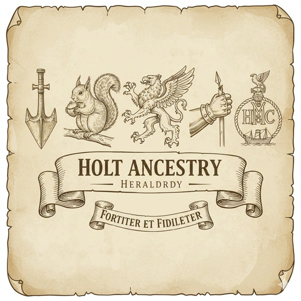

Mottoes used by the Holt Family
The origin of family mottoes is often rooted in the war cries of the Middle Ages or personal religious vows. In British heraldry, the motto is typically emblazoned on a scroll beneath the shield. While often in Latin, they can also appear in Norman French (the language of the English aristocracy for centuries) or English. Because the Holts were a "Commoner" family that rose to "Gentry" status in many different counties (Lancashire, Warwickshire, and London), different branches often adopted different mottoes to distinguish themselves from their cousins.
• Translation: While I breath I hope
• Usage: Used by the Holts of Bispham Hall (Lancashire) and the Holts of Stubbylee.
It is one of the most famous heraldic mottoes, signaling perseverance through adversity.
• Translation: What he wishes, he wishes fervently
• Usage: This is the primary motto of the Holt-Lomax family
and the Holts of Enfield. It suggests a family character of intense determination and strong will
• Translation: To conquer is to live
• Usage: Used by the Holts of Cheetham, the Smyth-Taylor-Holt line, and
notably adopted by the 143 Squadron of the RAF, which has historical ties to the region and name.
• Translation: Aim at a sure end
• Usage: Specifically associated with the Holt family of Liverpool,
prominent merchant princes and shipowners (notably the Blue Funnel Line).
• Translation: He hath exalted the humble
• Usage: Used by the Holte Baronets of Aston Hall (Erdington). This is a scriptural
reference to the Magnificat (Luke 1:52).
• Translation: I wound to heal
• Usage: Associated with the Holt of Middlesex and some Lancashire branches.
• Symbolism: The crest features a spearhead. This motto probably alludes to the spear of Achilles,
which had the power of curing as well as of inflicting wounds.
• Translation: What will be will be
• Usage: Used by the Holts of Gristlehurst (Lancashire). While famously associated with the Duke of
Bedford, Sir John Holt, the famous Lord Chief Justice, used this to signal a stoic acceptance of fate and the law.
• Translation: Speak, Do (or "Say it and do it")
• Usage: This was a common motto for the Holts of Grizzlehurst and several Yorkshire-border
branches. It emphasizes integrity—that one's actions should match their words.
• Translation: Always faithful
• Usage: Found on the crests of the Holt family of London. While common in heraldry, it was granted
to this branch to signify loyalty to the Crown during periods of political upheaval.
• Translation: In strength and in skill
• Usage: A rarer motto used by the Holts of Suffolk. It balances the idea of physical power with
intellectual or technical "art."
• Translation: Having no remorse
• Usage: James Maden Holt son of John Holt of Stubbylee."

Key Heraldic Symbols of the Holt Family
These Crest Symbols that go with these mottoes. The Holt family heraldry is rich with "canting" (visual puns) and symbols of precision. Because the name "Holt" originally meant a small wood or grove, you often see arboreal themes, but the most distinctive feature of the family’s various coats of arms is the Pheon (the heraldic spearhead).
The Pheon is the most pervasive Holt symbol, especially for the Lancashire branches like Gristlehurst and Cheetham. It is a
broad, barbed arrow or spearhead, usually shown pointing downward.
• Visual: Appears as three silver heads on a diagonal "bend" (stripe) or held in the hand of an armored arm.
• Symbolism: It represents penetrating wisdom and readiness for battle. It is the primary visual for the motto Ut
Sanem Vulnero ("I wound to heal"), suggesting that a "wound" (surgical or martial) is sometimes necessary for the greater
good or recovery.
Since the name "Holt" literally means a small grove or wood, many branches used "Canting Arms" (visual puns).
• Visual: A squirrel sitting (sejant) and cracking a nut, or a small green hill (mount vert) with trees.
• Symbolism: These represent industry, providence, and deep roots. The squirrel signifies the family’s ability to gather
resources and persevere through "winter" or hard times. This symbol is often paired with the motto Quod Vult, Valde Vult,
showing the intensity with which they pursue their goals.
Used primarily by the Holte Baronets of Aston Hall (Erdington), the griffin is a more "noble" and aggressive beast.
• Visual: A creature with the head/wings of an eagle and the body of a lion, often "erased" (showing only the head and neck
with a jagged edge).
• Symbolism: As the protector of gold and sacred sites, the griffin represents vigilance and dual strength (combining
the king of birds and the king of beasts). It anchors the motto Exaltavit Humiles, reminding the family that even those
as powerful as griffins must remain spiritually humble.